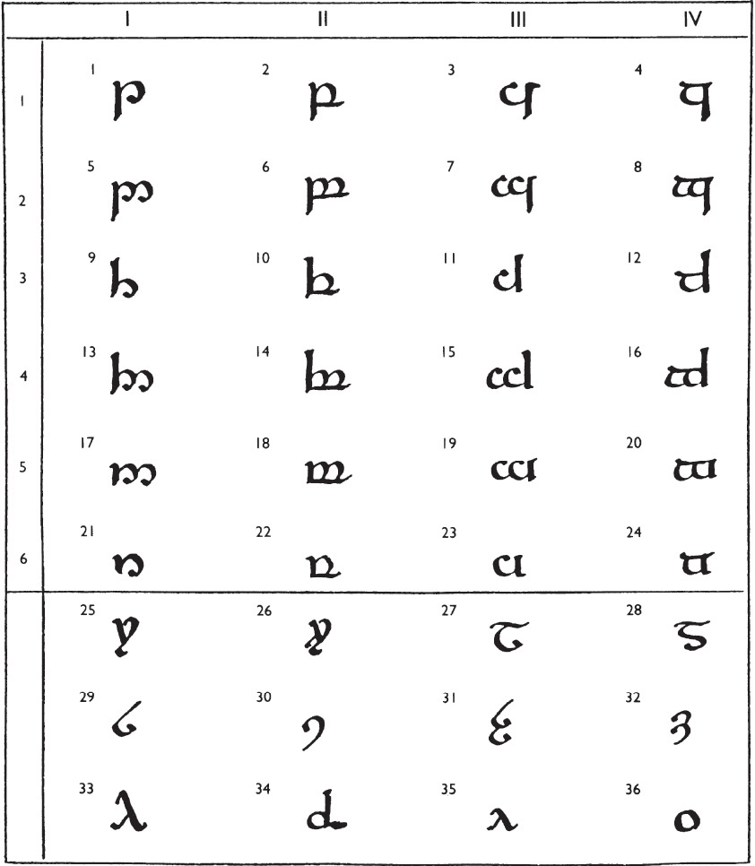
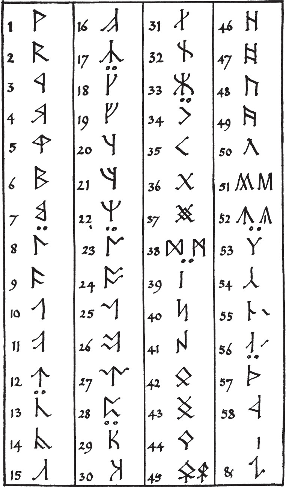
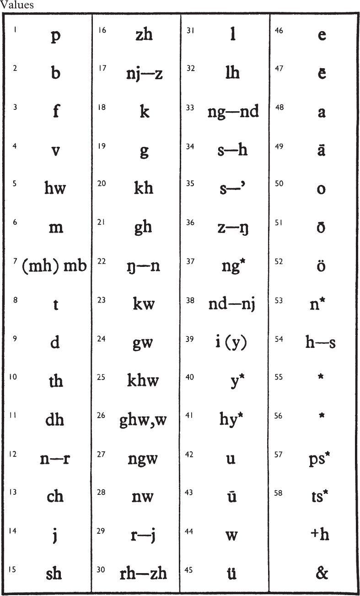

The Westron or Common Speech has been entirely translated into English equivalents. All Hobbit names and special words are intended to be pronounced accordingly: for example, Bolger has g as in bulge, and mathom rhymes with fathom.
In transcribing the ancient scripts I have tried to represent the original sounds (so far as they can be determined) with fair accuracy, and at the same time to produce words and names that do not look uncouth in modern letters. The High-elven Quenya has been spelt as much like Latin as its sounds allowed. For this reason c has been preferred to k in both Eldarin languages.
The following points may be observed by those who are interested in such details.
| C | has always the value of k even before e and i: celeb ‘silver’ should be pronounced as keleb. |
| CH | is only used to represent the sound heard in bach (in German or Welsh), not that in English church. Except at the end of words and before t this sound was weakened to h in the speech of Gondor, and that change has been recognized in a few names, such as Rohan, Rohirrim. (Imrahil is a Númenórean name.) |
| DH | represents the voiced (soft) th of English these clothes. It is usually related to d, as in S. galadh ‘tree’ compared with Q. alda; but is sometimes derived from n+r, as in Caradhras ‘Redhorn’ from caran-rass. |
| F | represents f, except at the end of words, where it is used to represent the sound of v (as in English of): Nindalf, Fladrif. |
| G | has only the sound of g in give, get: gil ‘star’, in Gildor, Gilraen, Osgiliath, begins as in English gild. |
| H | standing alone with no other consonant has the sound of h in house, behold. The Quenya combination ht has the sound of cht, as in German echt, acht: e.g. in the name Telumehtar ‘Orion’.1 See also CH, DH, L, R, TH, W, Y. |
| I | initially before another vowel has the consonantal sound of y in you, yore in Sindarin only: as in Ioreth, Iarwain. See Y. |
| K | is used in names drawn from other than Elvish languages, with the same value as c; kh thus represents the same sound as ch in Orkish Grishnákh, or Adûnaic (Númenórean) Adûnakhôr. On Dwarvish (Khuzdul) see note below. |
| L | represents more or less the sound of English initial l, as in let. It was, however, to some degree ‘palatalized’ between e, i and a consonant, or finally after e, i. (The Eldar would probably have transcribed English bell, fill as beol, fiol.) LH represents this sound when voiceless (usually derived from initial sl-). In (archaic) Quenya this is written hl, but was in the Third Age usually pronounced as l. |
| NG | represents ng in finger, except finally where it was sounded as in English sing. The latter sound also occurred initially in Quenya, but has been transcribed n (as in Noldo), according to the pronunciation of the Third Age. |
| PH | has the same sound as f. It is used (a) where the f-sound occurs at the end of a word, as in alph ‘swan’; (b) where the f-sound is related to or derived from a p, as in i-Pheriannath ‘the Halflings’ (perian); (c) in the middle of a few words where it represents a long ff (from pp) as in Ephel ‘outer fence’; and (d) in Adûnaic and Westron, as in Ar-Pharazôn (pharaz ‘gold’). |
| QU | has been used for cw, a combination very frequent in Quenya, though it did not occur in Sindarin. |
| R | represents a trilled r in all positions; the sound was not lost before consonants (as in English part). The Orcs, and some Dwarves, are said to have used a back or uvular r, a sound which the Eldar found distasteful. RH represents a voiceless r (usually derived from older initial sr-). It was written hr in Quenya. Cf. L. |
| S | is always voiceless, as in English so, geese; the z-sound did not occur in contemporary Quenya or Sindarin. SH, occurring in Westron, Dwarvish and Orkish, represents sounds similar to sh in English. |
| TH | represents the voiceless th of English in thin cloth. This had become s in spoken Quenya, though still written with a different letter; as in Q. Isil, S. Ithil, ‘Moon’. |
| TY | represents a sound probably similar to the t in English tune. It was derived mainly from c or t+y. The sound of English ch, which was frequent in Westron, was usually substituted for it by speakers of that language. Cf. HY under Y. |
| V | has the sound of English v, but is not used finally. See F. |
| W | has the sound of English w. HW is a voiceless w, as in English white (in northern pronunciation). It was not an uncommon initial sound in Quenya, though examples seem not to occur in this book. Both v and w are used in the transcription of Quenya, in spite of the assimilation of its spelling to Latin, since the two sounds, distinct in origin, both occurred in the language. |
| Y | is used in Quenya for the consonant y, as in English you. In Sindarin y is a vowel (see below). HY has the same relation to y as HW to w, and represents a sound like that often heard in English hew, huge; h in Quenya eht, iht had the same sound. The sound of English sh, which was common in Westron, was often substituted by speakers of that language. Cf. TY above. HY was usually derived from sy- and khy-; in both cases related Sindarin words show initial h, as in Q. Hyarmen ‘south’, S. Harad. |
Note that consonants written twice, as tt, ll, ss, nn, represent long, ‘double’ consonants. At the end of words of more than one syllable these were usually shortened: as in Rohan from Rochann (archaic Rochand).
In Sindarin the combinations ng, nd, mb, which were specially favoured in the Eldarin languages at an earlier stage, suffered various changes. mb became m in all cases, but still counted as a long consonant for purposes of stress (see below), and is thus written mm in cases where otherwise the stress might be in doubt.1 ng remained unchanged except initially and finally where it became the simple nasal (as in English sing). nd became nn usually, as Ennor ‘Middle-earth’, Q. Endóre; but remained nd at the end of fully accented monosyllables such as thond’ root’ (cf. Morthond ‘Blackroot’), and also before r, as Andros ‘long-foam’. This nd is also seen in some ancient names derived from an older period, such as Nargothrond, Gondolin, Beleriand. In the Third Age final nd in long words had become n from nn, as in Ithilien, Rohan, Anórien.
For vowels the letters i, e, a, o, u are used, and (in Sindarin only) y. As far as can be determined the sounds represented by these letters (other than y) were of normal kind, though doubtless many local varieties escape detection.2 That is, the sounds were approximately those represented by i, e, a, o, u in English machine, were, father, for, brute, irrespective of quantity.
In Sindarin long e, a, o had the same quality as the short vowels, being derived in comparatively recent times from them (older é, á, ó had been changed). In Quenya long é and ó were, when correctly2 pronounced, as by the Eldar, tenser and ‘closer’ than the short vowels.
Sindarin alone among contemporary languages possessed the ‘modified’ or fronted u, more or less as u in French lune. It was partly a modification of o and u, partly derived from older diphthongs eu, iu. For this sound y has been used (as in ancient English): as in lŷg ‘snake’, Q. leuca, or emyn pl. of amon ‘hill’. In Gondor this y was usually pronounced like i.
Long vowels are usually marked with the ‘acute accent’, as in some varieties of Fëanorian script. In Sindarin long vowels in stressed monosyllables are marked with the circumflex, since they tended in such cases to be specially prolonged;1 so in dûn compared with Dúnadan. The use of the circumflex in other languages such as Adûnaic or Dwarvish has no special significance, and is used merely to mark these out as alien tongues (as with the use of k).
Final e is never mute or a mere sign of length as in English. To mark this final e it is often (but not consistently) written ë.
The groups er, ir, ur (finally or before a consonant) are not intended to be pronounced as in English fern, fir, fur, but rather as English air, eer, oor.
In Quenya ui, oi, ai and iu, eu, au are diphthongs (that is, pronounced in one syllable). All other pairs of vowels are dissyllabic. This is often dictated by writing ëa (Eä), ëo, oë.
In Sindarin the diphthongs are written ae, ai, ei, oe, ui, and au. Other combinations are not diphthongal. The writing of final au as aw is in accordance with English custom, but is actually not uncommon in Fëanorian spellings.
All these diphthongs2 were ‘falling’ diphthongs, that is stressed on the first element, and composed of the simple vowels run together. Thus ai, ei, oi, ui are intended to be pronounced respectively as the vowels in English rye (not ray), grey, boy, ruin; and au (aw) as in loud, how and not as in laud, haw.
There is nothing in English closely corresponding to ae, oe, eu; ae and oe may be pronounced as ai, oi.
The position of the ‘accent’ or stress is not marked, since in the Eldarin languages concerned its place is determined by the form of the word. In words of two syllables it falls in practically all cases on the first syllable. In longer words it falls on the last syllable but one, where that contains a long vowel, a diphthong, or a vowel followed by two (or more) consonants. Where the last syllable but one contains (as often) a short vowel followed by only one (or no) consonant, the stress falls on the syllable before it, the third from the end. Words of the last form are favoured in the Eldarin languages, especially Quenya.
In the following examples the stressed vowel is marked by a capital letter: isIldur, Orome, erEssëa, fËanor, ancAlima, elentÁri, dEnethor, periAnnath, ecthElion, pelArgir, silIvren. Words of the type elentÁri ‘star-queen’ seldom occur in Quenya where the vowel is é, á, ó, unless (as in this case) they are compounds; they are commoner with the vowels í, ú, as andÚne ‘sunset, west’.
They do not occur in Sindarin except in compounds. Note that Sindarin dh, th, ch are single consonants and represent single letters in the original scripts.
In names drawn from other languages than Eldarin the same values for the letters are intended, where not specially described above, except in the case of Dwarvish. In Dwarvish, which did not possess the sounds represented above by th and ch (kh), th and kh are aspirates, that is t or k followed by an h, more or less as in backhand, outhouse.
Where z occurs the sound intended is that of English z. gh in the Black Speech and Orkish represents a ‘back spirant’ (related to g as dh to d): as in ghâsh and agh.
The ‘outer’ or Mannish names of the Dwarves have been given Northern forms, but the letter-values are those described. So also in the case of the personal and place-names of Rohan (where they have not been modernized), except that here éa and éo are diphthongs, which may be represented by the ea of English bear, and the eo of Theobald; y is the modified u. The modernized forms are easily recognized and are intended to be pronounced as in English. They are mostly place-names: as Dunharrow (for Dúnharg), except Shadowfax and Wormtongue.
The scripts and letters used in the Third Age were all ultimately of Eldarin origin, and already at that time of great antiquity. They had reached the stage of full alphabetic development, but older modes in which only the consonants were denoted by full letters were still in use.
The alphabets were of two main, and in origin independent, kinds: the Tengwar or Tîw, here translated as ‘letters’; and the Certar or Cirth, translated as ‘runes’. The Tengwar were devised for writing with brush or pen, and the squared forms of inscriptions were in their case derivative from the written forms. The Certar were devised and mostly used only for scratched or incised inscriptions.
The Tengwar were the more ancient; for they had been developed by the Noldor, the kindred of the Eldar most skilled in such matters, long before their exile. The oldest Eldarin letters, the Tengwar of Rúmil, were not used in Middle-earth. The later letters, the Tengwar of Fëanor, were largely a new invention, though they owed something to the letters of Rúmil. They were brought to Middle-earth by the exiled Noldor, and so became known to the Edain and Númenóreans. In the Third Age their use had spread over much the same area as that in which the Common Speech was known.
The Cirth were devised first in Beleriand by the Sindar, and were long used only for inscribing names and brief memorials upon wood or stone. To that origin they owe their angular shapes, very similar to the runes of our times, though they differed from these in details and were wholly different in arrangement. The Cirth in their older and simpler form spread eastward in the Second Age, and became known to many peoples, to Men and Dwarves, and even to Orcs, all of whom altered them to suit their purposes and according to their skill or lack of it. One such simple form was still used by the Men of Dale, and a similar one by the Rohirrim.
But in Beleriand, before the end of the First Age, the Cirth, partly under the influence of the Tengwar of the Noldor, were rearranged and further developed. Their richest and most ordered form was known as the Alphabet of Daeron, since in Elvish tradition it was said to have been devised by Daeron, the minstrel and loremaster of King Thingol of Doriath. Among the Eldar the Alphabet of Daeron did not develop true cursive forms, since for writing the Elves adopted the Fëanorian letters. The Elves of the West indeed for the most part gave up the use of runes altogether. In the country of Eregion, however, the Alphabet of Daeron was maintained in use and passed thence to Moria, where it became the alphabet most favoured by the Dwarves. It remained ever after in use among them and passed with them to the North. Hence in later times it was often called Angerthas Moria or the Long Rune-rows of Moria. As with their speech the Dwarves made use of such scripts as were current and many wrote the Fëanorian letters skilfully; but for their own tongue they adhered to the Cirth, and developed written pen-forms from them.
The table shows, in formal book-hand shape, all the letters that were commonly used in the West-lands in the Third Age. The arrangement is the one most usual at the time, and the one in which the letters were then usually recited by name.
This script was not in origin an ‘alphabet’: that is, a haphazard series of letters, each with an independent value of its own, recited in a traditional order that has no reference either to their shapes or to their functions.1 It was, rather, a system of consonantal signs, of similar shapes and style, which could be adapted at choice or convenience to represent the consonants of languages observed (or devised) by the Eldar. None of the letters had in itself a fixed value; but certain relations between them were gradually recognized.
The system contained twenty-four primary letters, 1–24, arranged in four témar (series), each of which had six tyeller (grades). There were also ‘additional letters’, of which 25–36 are examples. Of these 27 and 29 are the only strictly independent letters; the remainder are modifications of other letters. There was also a number of tehtar (signs) of varied uses. These do not appear in the table.2
The primary letters were each formed of a telco (stem) and a lúva (bow).

The forms seen in 1–4 were regarded as normal. The stem could be raised, as in 9–16; or reduced, as in 17–24. The bow could be open, as in Series I and III; or closed, as in II and IV; and in either case it could be doubled, as e.g. in 5–8.
The theoretic freedom of application had in the Third Age been modified by custom to this extent that Series I was generally applied to the dental or t-series (tincotéma), and II to the labials or p-series (parmatéma). The application of Series III and IV varied according to the requirements of different languages.
In languages like the Westron, which made much use of consonants1 such as our ch, j, sh, Series III was usually applied to these; in which case Series IV was applied to the normal k-series (calmatéma). In Quenya, which possessed besides the calmatéma both a palatal series (tyelpetéma) and a labialized series (quessetéma), the palatals were represented by a Fëanorian diacritic denoting ‘following y’ (usually two underposed dots), while Series IV was a kw-series.
Within these general applications the following relations were also commonly observed. The normal letters, Grade 1, were applied to the ‘voiceless stops’: t, p, k, etc. The doubling of the bow indicated the addition of ‘voice’: thus if 1, 2, 3, 4=t, p, ch, k (or t, p, k, kw) then 5, 6, 7, 8=d, b, j, g (or d, b, g, gw). The raising of the stem indicated the opening of the consonant to a ‘spirant’: thus assuming the above values for Grade 1, Grade 3 (9–12)=th, f, sh, ch (or th, f, kh, khw/hw), and Grade 4 (13–16)=dh, v, zh, gh (or dh, v, gh, ghw/w).
The original Fëanorian system also possessed a grade with extended stems, both above and below the line. These usually represented aspirated consonants (e.g. t+h, p+h, k+h), but might represent other consonantal variations required. They were not needed in the languages of the Third Age that used this script; but the extended forms were much used as variants (more clearly distinguished from Grade 1) of Grades 3 and 4.
Grade 5 (17–20) was usually applied to the nasal consonants: thus 17 and 18 were the most common signs for n and m. According to the principle observed above, Grade 6 should then have represented the voiceless nasals; but since such sounds (exemplified by Welsh nh or ancient English hn) were of very rare occurrence in the languages concerned, Grade 6 (21–24) was most often used for the weakest or ‘semi-vocalic’ consonants of each series. It consisted of the smallest and simplest shapes among the primary letters. Thus 21 was often used for a weak (untrilled) r, originally occurring in Quenya and regarded in the system of that language as the weakest consonant of the tincotéma; 22 was widely used for w; where Series III was used as a palatal series 23 was commonly used as consonantal y.2
Since some of the consonants of Grade 4 tended to become weaker in pronunciation, and to approach or to merge with those of Grade 6 (as described above), many of the latter ceased to have a clear function in the Eldarin languages; and it was from these letters that the letters expressing vowels were largely derived.
NOTE
The standard spelling of Quenya diverged from the applications of the letters above described. Grade 2 was used for nd, mb, ng, ngw, all of which were frequent, since b, g, gw only appeared in these combinations, while for rd, ld the special letters 26, 28 were used. (For lv, not for lw, many speakers, especially Elves, used lb: this was written with 27+6, since lmb could not occur.) Similarly, Grade 4 was used for the extremely frequent combinations nt, mp, nk, nqu, since Quenya did not possess dh, gh, ghw, and for v used letter 22. See the Quenya letter-names pp. 1122–3.
The additional letters. No. 27 was universally used for l. No. 25 (in origin a modification of 21) was used for ‘full’ trilled r. Nos. 26, 28 were modifications of these. They were frequently used for voiceless r (rh) and l (lh) respectively. But in Quenya they were used for rd and ld. 29 represented s, and 31 (with doubled curl) z in those languages that required it. The inverted forms, 30 and 32, though available for use as separate signs, were mostly used as mere variants of 29 and 31, according to the convenience of writing, e.g. they were much used when accompanied by superimposed tehtar.
No. 33 was in origin a variation representing some (weaker) variety of 11; its most frequent use in the Third Age was h. 34 was mostly used (if at all) for voiceless w (hw). 35 and 36 were, when used as consonants, mostly applied to y and w respectively.
The vowels were in many modes represented by tehtar, usually set above a consonantal letter. In languages such as Quenya, in which most words ended in a vowel, the tehta was placed above the preceding consonant; in those such as Sindarin, in which most words ended in a consonant, it was placed above the following consonant. When there was no consonant present in the required position, the tehta was placed above the ‘short carrier’, of which a common form was like an undotted i. The actual tehtar used in different languages for vowel-signs were numerous. The commonest, usually applied to (varieties of) e, i, a, o, u, are exhibited in the examples given. The three dots, most usual in formal writing for a, were variously written in quicker styles, a form like a circumflex being often employed.1 The single dot and the ‘acute accent’ were frequently used for i and e (but in some modes for e and i). The curls were used for o and u. In the Ring-inscription the curl open to the right is used for u; but on the title-page this stands for o, and the curl open to the left for u. The curl to the right was favoured, and the application depended on the language concerned: in the Black Speech o was rare.
Long vowels were usually represented by placing the tehta on the ‘long carrier’, of which a common form was like an undotted j. But for the same purpose the tehtar could be doubled. This was, however, only frequently done with the curls, and sometimes with the ‘accent’. Two dots was more often used as a sign for following y.
The West-gate inscription illustrates a mode of ‘full writing’ with the vowels represented by separate letters. All the vocalic letters used in Sindarin are shown. The use of No. 30 as a sign for vocalic y may be noted; also the expression of diphthongs by placing the tehta for following y above the vowel-letter. The sign for following w (required for the expression of au, aw) was in this mode the u-curl or a modification of it ˜. But the diphthongs were often written out in full, as in the transcription. In this mode length of vowel was usually indicated by the ‘acute accent’, called in that case andaith ‘long mark’.
There were beside the tehtar already mentioned a number of others, chiefly used to abbreviate the writing, especially by expressing frequent consonant combinations without writing them out in full. Among these, a bar (or a sign like a Spanish tilde) placed above a consonant was often used to indicate that it was preceded by the nasal of the same series (as in nt, mp, or nk); a similar sign placed below was, however, mainly used to show that the consonant was long or doubled. A downward hook attached to the bow (as in hobbits, the last word on the title-page) was used to indicate a following s, especially in the combinations ts, ps, ks (x), that were favoured in Quenya.
There was of course no ‘mode’ for the representation of English. One adequate phonetically could be devised from the Fëanorian system. The brief example on the title-page does not attempt to exhibit this. It is rather an example of what a man of Gondor might have produced, hesitating between the values of the letters familiar in his ‘mode’ and the traditional spelling of English. It may be noted that a dot below (one of the uses of which was to represent weak obscured vowels) is here employed in the representation of unstressed and, but is also used in here for silent final e; the, of, and of the are expressed by abbreviations (extended dh, extended v, and the latter with an under-stroke).
The names of the letters. In all modes each letter and sign had a name; but these names were devised to fit or describe the phonetic uses in each particular mode. It was, however, often felt desirable, especially in describing the uses of the letters in other modes, to have a name for each letter in itself as a shape. For this purpose the Quenya ‘full names’ were commonly employed, even where they referred to uses peculiar to Quenya. Each ‘full name’ was an actual word in Quenya that contained the letter in question. Where possible it was the first sound of the word; but where the sound or the combination expressed did not occur initially it followed immediately after an initial vowel. The names of the letters in the table were (1) tinco metal, parma book, calma lamp, quesse feather; (2) ando gate, umbar fate, anga iron, ungwe spider’s web; (3) thúle (súle) spirit, formen north, harma treasure (or aha rage), hwesta breeze; (4) anto mouth, ampa hook, anca jaws, unque a hollow; (5) númen west, malta gold, noldo (older ngoldo) one of the kindred of the Noldor, nwalme (older ngwalme) torment; (6) óre heart (inner mind), vala angelic power, anna gift, vilya air, sky (older wilya); rómen east, arda region, lambe tongue, alda tree; silme starlight, silme nuquerna (s reversed), áre sunlight (or esse name), áre nuquerna; hyarmen south, hwesta sindarinwa, yanta bridge, úre heat. Where there are variants this is due to the names being given before certain changes affected Quenya as spoken by the Exiles. Thus No. 11 was called harma when it represented the spirant ch in all positions, but when this sound became breath h initially 1 (though remaining medially) the name aha was devised. áre was originally áze, but when this z became merged with 21, the sign was in Quenya used for the very frequent ss of that language, and the name esse was given to it. hwesta sindarinwa or ‘Grey-elven hw’ was so called because in Quenya 12 had the sound of hw, and distinct signs for chw and hw were not required. The names of the letters most widely known and used were 17 n, 33 hy, 25 r, 10 f: númen, hyarmen, rómen, formen=west, south, east, north (cf. Sindarin dûn or annûn, harad, rhûn or amrûn, forod). These letters commonly indicated the points W, S, E, N even in languages that used quite different terms. They were, in the West-lands, named in this order, beginning with and facing west; hyarmen and formen indeed meant left-hand region and right-hand region (the opposite to the arrangement in many Mannish languages).
(ii)
THE CIRTH
The Certhas Daeron was originally devised to represent the sounds of Sindarin only. The oldest cirth were Nos. 1, 2, 5, 6; 8, 9, 12; 18, 19, 22; 29, 31; 35, 36; 39, 42, 46, 50; and a certh varying between 13 and 15. The assignment of values was unsystematic. Nos. 39, 42, 46, 50 were vowels and remained so in all later developments. Nos. 13, 15 were used for h or s, according as 35 was used for s or h. This tendency to hesitate in the assignment of values for s and h continued in later arrangements. In those characters that consisted of a ‘stem’ and a ‘branch’, 1–31, the attachment of the branch was, if on one side only, usually made on the right side. The reverse was not infrequent, but had no phonetic significance.
The extension and elaboration of this certhas was called in its older form the Angerthas Daeron, since the additions to the old cirth and their reorganization was attributed to Daeron. The principal additions, however, the introductions of two new series, 13–17, and 23–28, were actually most probably inventions of the Noldor of Eregion, since they were used for the representation of sounds not found in Sindarin.
In the rearrangement of the Angerthas the following principles are observable (evidently inspired by the Fëanorian system): (1) adding a stroke to a branch added ‘voice’; (2) reversing the certh indicated opening to a ‘spirant’; (3) placing the branch on both sides of the stem added voice and nasality. These principles were regularly carried out, except in one point. For (archaic) Sindarin a sign for a spirant m (or nasal v) was required, and since this could best be provided by a reversal of the sign for m, the reversible No. 6 was given the value m, but No. 5 was given the value hw.
No. 36, the theoretic value of which was z, was used, in spelling Sindarin or Quenya, for ss: cf. Fëanorian 31. No. 39 was used for either i or y (consonant); 34, 35 were used indifferently for s; and 38 was used for the frequent sequence nd, though it was not clearly related in shape to the dentals.


In the Table of Values those on the left are, when separated by—, the values of the older Angerthas. Those on the right are the values of the Dwarvish Angerthas Moria.1 The Dwarves of Moria, as can be seen, introduced a number of unsystematic changes in value, as well as certain new cirth: 37, 40, 41, 53, 55, 56. The dislocation in values was due mainly to two causes: (1) the alteration in the values of 34, 35, 54 respectively to h, ’ (the clear or glottal beginning of a word with an initial vowel that appeared in Khuzdul), and s; (2) the abandonment of the Nos. 14, 16 for which the Dwarves substituted 29, 30. The consequent use of 12 for r, the invention of 53 for n (and its confusion with 22); the use of 17 as z, to go with 54 in its value s, and the consequent use of 36 as η and the new certh 37 for ng may also be observed. The new 55, 56 were in origin a halved form of 46, and were used for vowels like those heard in English butter, which were frequent in Dwarvish and in the Westron. When weak or evanescent they were often reduced to a mere stroke without a stem. This Angerthas Moria is represented in the tomb-inscription.
The Dwarves of Erebor used a further modification of this system, known as the mode of Erebor, and exemplified in the Book of Mazarbul. Its chief characteristics were: the use of 43 as z; of 17 as ks (x); and the invention of two new cirth, 57, 58 for ps and ts. They also reintroduced 14, 16 for the values j, zh; but used 29, 30 for g, gh, or as mere variants of 19, 21. These peculiarities are not included in the table, except for the special Ereborian cirth, 57, 58.